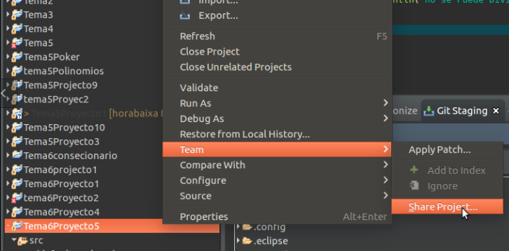
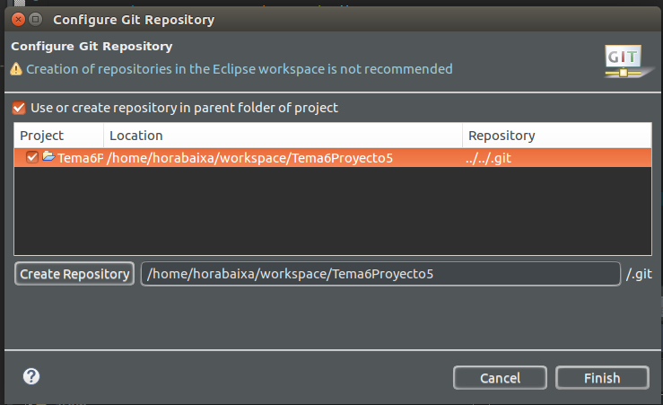
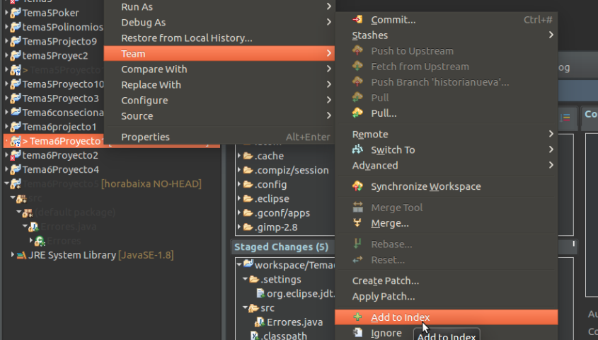

Crear un nuevo repositorio de area local
Una ventaja importante de Git en comparación con SVN o CVS es que se puede crear fácilmente repositorios locales, incluso antes de compartirlos con otras personas. De esta manera, se puede versión de su trabajo a nivel local. En primer lugar, usted tiene que crear un proyecto en Eclipse que desea compartir a través de su repositorio local. Para los propósitos posteriores que sería útil añadir algunos archivos, por ejemplo, una clase Java para su proyecto.
Después de haber creado su proyecto, seleccione el menú contextual haciendo clic derecho y vaya a Team => Share Project Seleccionar Git como el tipo de repositorio y pulsa Siguiente . En la siguiente ventana seleccione su proyecto, golpeó el Crear Repositorio y haga clic en Finalizar.


Antes de que pueda cometer el archivos a su repositorio, tiene que añadirlos. Simplemente haga clic derecho en el nodo del proyecto compartido y vaya a Team => Add

Después de esta operación, el signo de interrogación. debe cambiar a un signo más